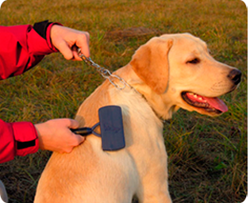
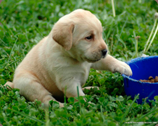
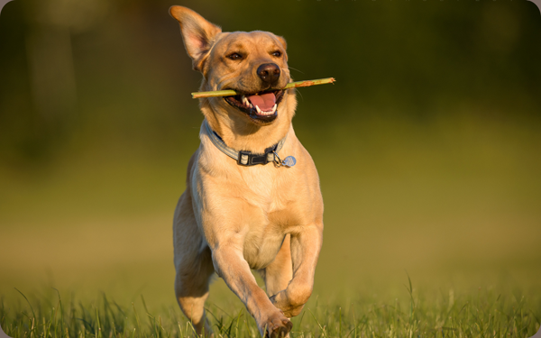
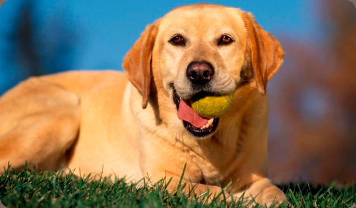

Правила ухода
Правила ухода за лабрадором довольно просты и соответствуют общим критериям ухода за собакой. Но, как и у любой породы, у лабрадора есть свои особенности, требующие особого внимания хозяина. Одна из них – это уши, висячая форма которых может привести к воспалениям, полученным от загрязнений или проникновений паразитов. Регулярный осмотр и очищение ушей поможет избежать опасностей, связанных с инфицированием.
 Другая особенность – это специфическая шерсть с плотным, практически водонепроницаемым подшерстком. Такую шерсть не нужно мыть без крайней необходимости, она обладает способностью к самоочищению. Просто расчёсывайте её раз в неделю, а в период линьки в 2-3 раза чаще, чтобы избавлять от омертвевших волосков. Благодаря такой несложной процедуре ваш лабрадор всегда будет выглядеть ухоженным.
 Третья особенность ухода за лабрадором заключается в составлении правильного рациона питания. Конечно, это необходимо для всех собак, но лабрадор ретривер может быстро набрать лишний вес или пристраститься к запретным продуктам, например, стать сладкоежкой. Не важно, кормите ли вы лабрадора готовой смесью или натуральным кормом, главное, правильно рассчитать норму на каждое кормление. Из натурального корма лучше отдать предпочтение питательному мясу и полезным овощам, не делая упор на каши. Ни в коем случае нельзя давать макаронные изделия, от которых лабрадор быстро поправится, но они не принесут ему пользу.
Для более точного расчёта объёма порции нужно знать вес своей собаки. Если вы кормите согласно норме, но собака выглядит худой, нужно oбязательно дать её препараты против глистов, так как причина недостаточного веса, скорее всего, именно в этом. Если же, наоборот, вы даёте нужное по вашим подсчётам количество корма, а собака тучнеет, значит, она лишена необходимых физических нагрузок.
Из этого вытекает четвёртая важная особенность ухода за лабрадором: ему необходимо обеспечить физические нагрузки. Прогулок на поводке для этой собаки явно недостаточно. Ей нужно давать побегать на природе или хотя бы в парке или в местах для выгула собак. Хотя эта порода уже давно приспособлена для жизни в городах, её связь с природой сохранилась. Лабрадор обожает поездки на природу, особенно в места, где есть водоёмы. Не забывайте, что это большой любитель плавания, особенно он любит плавать за брошенным в воду предметом. Поэтому если у вас есть такая возможность, то обязательно берите лабрадора с собой на речку или озеро.
Дрессировка и воспитание
Лабрадор легко поддается обучению и дрессировке. Важно начинать это делать вовремя, не дожидаться, когда собака повзрослеет и успеет приобрести нежелательные привычки. Достаточно сказать, что трехмесячные щенки способны решить учебные задачи, доступные другим породам лишь в 6 -7 месяцев.
Собака постоянно должна иметь какое-то занятие — хотя бы приносить хозяину тапочки или ловить брошенные детьми игрушки.
Одно из природных свойств лабрадора — пристрастие к воде. Одно удовольствие видеть, как они ныряют и плавают, помогая себе хвостом. И вторая страсть — заниматься апортировкой предметов — а это повод научить собаку выполнять команду «Апорт!» при игре с тарелками.
Хозяева должны уделять ей максимум внимания, чтобы с раннего возраста она правильно адаптировалась к правилам общения с человеком, подчинялась его командам. Набраться терпения и объяснять, как ребенку, что можно делать, а чего — нельзя. Крики и физическое воздействие при этом недопустимы.